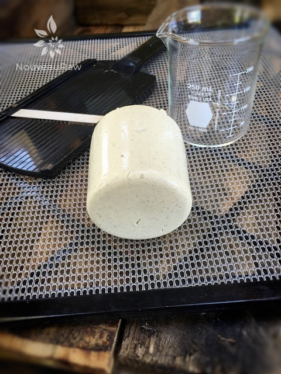
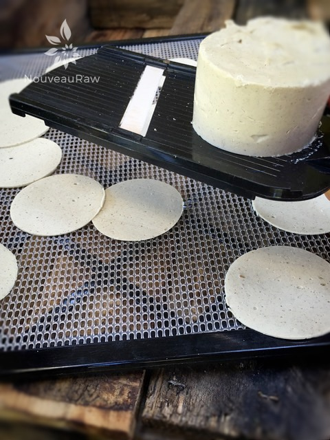

Caraway and Dill Cheese Chips
 high-raw / vegan / gluten-free
high-raw / vegan / gluten-free
Before we get started, I want to apologize in advance, should I repeat some info here from a similar recipe. Oh, heck, it’s not “should I” … I flat out will repeat myself. Hehe, It’s just that I don’t know which of these cheese chip recipes that you will land on, and there is pertinent information that is worthy of being repeated.
These chips have an authentic chip-crunching sound. Seriously, I am not pulling your apron strings! They are crunchy, snappy, crispy, and full of amazing concentrated flavors.
Dehydrator Magic
While they are dehydrating, they naturally curl around the edges, giving them that fried look. They also deepen in color. So many wonderful unexpected surprises.
The key is to use a mandolin that will create very thin slices. I own many different ones, and I find that (this) one works the best. The reason being is because it not only creates those thin slices that we are after, but you can also hold it over the dehydrator tray, letting the chips fall however they may. :)
I have tested the chips at different thicknesses, and the thinnest you can safely get them the better they are. Otherwise, they will be chewy, which isn’t a bad thing in general BUT in the chip world… not so good.
You will want them to be a single layer, but it is ok if they fold over onto themselves. This just adds more of that chip characteristic that we love.
It’s hard to find a person who can resist the salty and crunchy allure of a chip. And when we try to present them with a healthy snack alternative, to them it usually equates to eating something akin to cardboard. It doesn’t have to be that way folks. Not with cheese chips like these! I mean seriously… look closely at these photos. I hope you find them intriguing and give this recipe a try. Please let me know down below in the comments what you think. Many blessings, amie sue
- 1/2 cup water
- 2 Tbsp fresh lemon juice
- 2 Tbsp tahini
- 1/2 cup cashews, soaked 2+ hours
- 1/4 cup nutritional yeast
- 2 tsp ground caraway seeds
- 1 tsp Himalayan pink salt
- 1/2 tsp garlic powder
- 1/2 tsp onion powder
- 1/4 tsp black pepper
- 1 tsp dried dill
- 1 tsp whole caraway seeds
Agar gel:
Preparation:
Cheese base:
- Set aside a 2 cup storage container. You can use any shape or mold.
- Be sure to soak, drain, and discard the soak water from the cashew.
- If you need a nut-free suggestion… use soaked sunflower seeds.
- In a high-speed blender add 1/2 cup water, lemon juice, tahini, cashews, nutritional yeast, ground caraway seeds, salt, garlic powder, onion powder, and black pepper. Blend until smooth; no grit should be detected. We will add the whole caraway seeds and dill towards the end.
Agar gel:
- In a small saucepan bring 1 cup water and the agar to boil. Whisk briskly.
- Reduce the heat and simmer, often whisking, for 5 to 10 minutes, or until completely dissolved.
- Before adding the agar gel to the blender, get a vortex going in it.
- Slowly pour the agar gel into the blender.
- Work quickly!
- Process until completely smooth, scraping down the sides of the blender jar as necessary.
- Quickly add the dill and caraway seeds and just blend it in for a few seconds. Leave bits and pieces for visual and texture purposes.
- Pour into container(s) and cool uncovered in the refrigerator.
Creating the chips:
- Remove the cheese from the mold and using a mandolin, cut very thin slices, allowing them to drop directly onto the mesh sheet that comes with the dehydrator.
- Let the chips fall where they may, even if they fold and crinkle. They are like snowflakes. None should be the same.
- Think of how chips look when you buy a bag of them… or use to anyway. hehe
- Sprinkle with sea salt and black pepper.
- Dehydrate at 145 degrees (F) for 1 hour, then reduce to 115 degrees (F) for 10+ hours.
- The dry time will vary depending on how full the machine is, the humidity, climate, and so forth. So use the dry times as a guide.
- One done and crispy, allow them to cool and then store in an airtight container on the counter for 5-7 days. Should they start to collect moisture just pop them back in the dehydrator to crisp them up.

You will want a mandolin that slices very thin slices. If you want to create round chips, look for a glass container in your kitchen that is cylindrical. I used a beaker.

© AmieSue.com